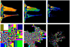
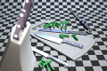

Interests (Computer Graphics):
- Photo-Realistic Image Synthesis and (Quasi-) Monte Carlo Methods
- (Real-Time) Global Illumination
- Ray Tracing
- (Massively) Parallel Programming
Links and Projects:
- My Linkedin Profile
- NeoTextureEdit: my Open Source procedural texture editor
- MysticTri: my Android Games
- My old Homepage @ Ulm University (with a list of my past teaching experience)
Publications:

|
Edge-Optimized À-Trous Wavelets for Local Contrast Enhancement with Robust Denoising
Johannes Hanika, Holger Dammertz, Hendrik Lensch; in p. 1879–1886 Computer Graphics Forum, 30/7 (Proceedings of Pacific Graphics 2011) [PDF] [Poster][Bibtex] |

|
AVDT - Automatic Visualization of Descriptive Texts
Christian Spika, Katharina Schwarz, Holger Dammertz, Hendrik P. A. Lensch; Proceedings of VMV 2011, pp. 129-136 [PDF][Bibtex] |

|
Massively Parallel Multiclass Object Recognition
Helmut Sedding and Ferdinand Deger and Holger Dammertz and Jan Bouecke and Hendrik Lensch; Proceedings of the VMV 2010 pp. 251-257 [PDF][Bibtex] |

|
Graphical Interface Models for Procedural Mesh Growing
Stefan Menz and Holger Dammertz and Johannes Hanika and Michael Weber and Hendrik Lensch; Proceedings of the VMV 2010 pp. 17-24 [PDF][Bibtex] |

|
Progressive Point-Light-Based Global Illumination
Holger Dammertz, Alexander Keller, Hendrik Lensch; Computer Graphics Forum Volume 29 (2010), number 8 pp. 2504-2515 [CGF] [PDF][Bibtex] |

|
Geometry Construction from Caustic Images
Manuel Finckh, Holger Dammertz, Hendrik Lensch; in Computer Vision - ECCV 2010 (Lecture Notes in Computer Science Volume 6315) p. 464-477 [PDF][Bibtex] |

|
Edge-Avoiding A-Trous Wavelet Transform for fast Global Illumination Filtering
Holger Dammertz, Daniel Sewtz, Johannes Hanika, Hendrik Lensch; Proceedings of HPG 2010, p. 67-75 (3rd best paper) [PDF][Bibtex] [YouTube] |
|  |
A Hierarchical Automatic Stopping Condition for Monte Carlo Global Illumination
Holger Dammertz, Johannes Hanika, Alexander Keller, Hendrik Lensch; Full Papers Proceedings of the WSCG 2010, p. 159-164 [WSCG][Bibtex] |

|
Plane Sampling for Light Paths from the Environment Map
Holger Dammertz, and Johannes Hanika, in journal of graphics, gpu, and game tools, volume 14, number 2, pp 25-31, 2009. [AKPeters] [Bibtex] |

|
Textures on Rank-1 Lattices
Sabrina Dammertz, Holger Dammertz, Alexander Keller, and Hendrik Lensch in p. 1945-1954 Computer Graphics Forum 28/7 (Proceedings of Pacific Graphics 2009) Got the PG09 Distinguished Paper Award: [PDF][Bibtex] |

|
Efficient Search for Low-Dimensional Rank-1 Lattices with Applications in Graphics
Sabrina Dammertz, Holger Dammertz, and Alexander Keller, in: Monte Carlo and Quasi-Monte Carlo Methods 2006, Springer, 2008 [PDF][Bibtex] |

|
Simulation of Fluorescent Concentrators (slightly extended)
Marion Bendig, Johannes Hanika, Holger Dammertz, Jan Christoph Goldschmidt, Marius Peters, Michael Weber (IEEE/EG Symposium on Interactive Ray Tracing 2008), 2008 [PDF][Bibtex] |

|
Edge Volume Heuristic - Robust Triangle Subdivision for Improved BVH Performance
Holger Dammertz and Alexander Keller (IEEE/EG Symposium on Interactive Ray Tracing 2008), 2008 [PDF][Bibtex] |

|
QBVH: Shallow Bounding Volume Hierarchies for Fast SIMD Ray Tracing of Incoherent Rays
Holger Dammertz, Johannes Hanika and Alexander Keller, p. 1225-1234 in: Computer Graphics Forum (Proc. 19th Eurographics Symposium on Rendering), 2008 [PDF][Bibtex] |

|
Simulation on Rank-1 Lattices
Holger Dammertz, Sabrina Dammertz and Alexander Keller, p. 205-216 in: Monte Carlo and Quasi-Monte Carlo Methods 2006, Springer, 2008 [PDF][Bibtex] |

|
Improving Ray Tracing Precision by Object Space Intersection Computation
Holger Dammertz and Alexander Keller; The 2006 IEEE Symposium on Interactive Rendering [PDF][Bibtex] |
Talks:
Massively Parallel Random Number GenerationTalk at the GPU Technology Conference 2010 in San Jose, CA
[Project Site] [Src] [Slides][Bibtex]
Theses:
|  | PhD thesis: Acceleration Methods for Ray Tracing based Global Illumination Holger Dammertz, 2011 [PDF] (10MB, contains compressed images) |
 |
Master's thesis: Floating-Point Precision Ray Tracing of Free-Form Surfaces Holger Dammertz, 2005 [PDF] |